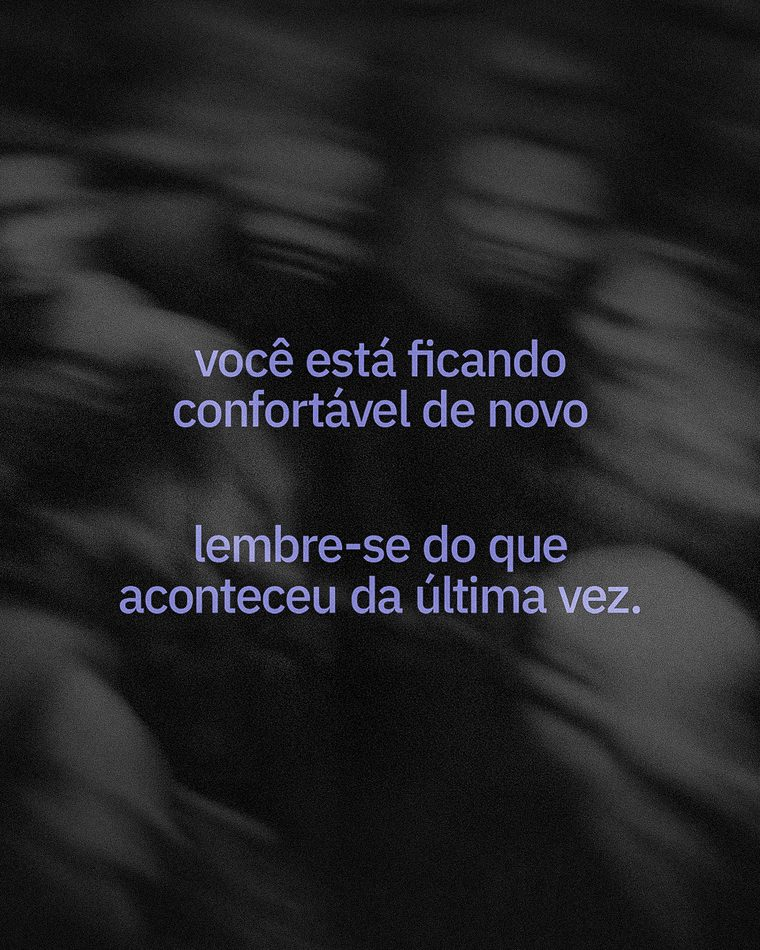
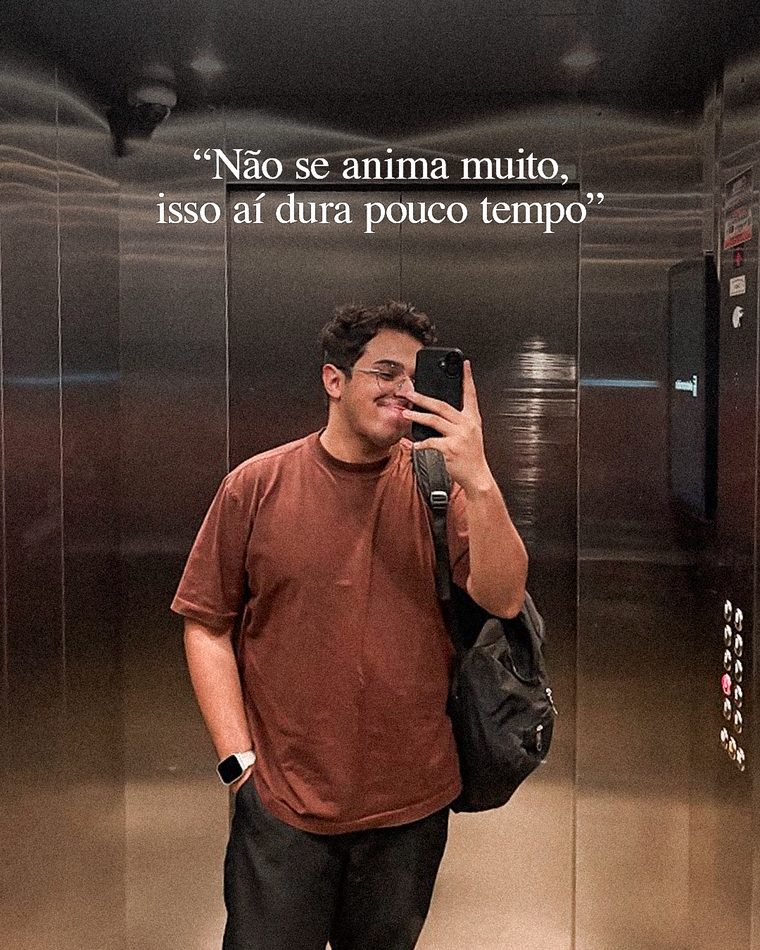
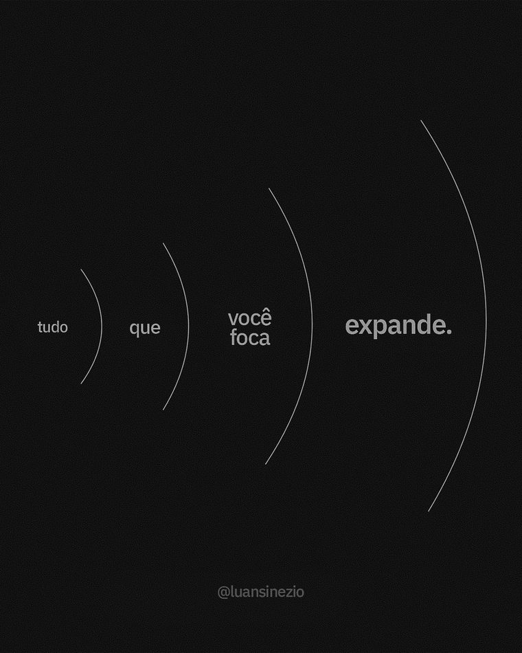

Cinco marcas que separam o perfil dele do perfil da agência.
Uma peça do Luan se reconhece antes de a assinatura aparecer. São cinco decisões, e quando uma cai a peça passa a parecer material da Beza com o texto trocado. As cinco valem em post, capa de reel, slide de aula e deck.
Os 22 hexes de superfície e de tipografia têm R=G=B exato, desvio de canal 0 nos dois temas. O cinza da Beza carrega matiz de propósito (#8B8DA1 tem desvio 22, #606282 tem 34) e é isso que dá o ar lilás dela no feed. Aqui o cinza não puxa pra lado nenhum, e a neutralidade é o que mantém os dois perfis distinguíveis lado a lado na grade.
Grão é decisão por peça e tem dois valores possíveis: 0 ou desvio padrão de 9 a 13 no high-pass. Medido nas peças de julho: "quebre o padrão" saiu com 0,00 nos quatro cantos, "foca e expande" com 9,4 e "confortável" com 12,5. O ruído é monocromático, R=G=B por pixel, overlay 5% no escuro e multiply 4% no claro. Valor intermediário lê como compressão de JPEG.
| Medida | Valor na peça | Onde foi medido |
|---|---|---|
| Corpo do texto | 70px em quadro de 1080 (6,5% da largura) | "confortável", 1080×1350 |
| Entrelinha | 72px de pitch, line-height 1,03 | Leading colado é a assinatura do bloco |
| Espaço entre estrofes | 194px (2,7 linhas) | Uma linha vazia inteira |
| Largura do bloco | 802px de 1080 (74%) | Centralizado no eixo 540 |
| Peso | Plex Sans 600 na peça, 500 em tela | gerar.py carrega IBMPlexSans-SemiBold.ttf |
| Tracking | -0,02em | Vale em título de deck e de slide também |
Tudo em caixa baixa, inclusive o começo da frase. Só o ponto final aparece. O segundo layout do lote é o mesmo bloco ancorado no terço superior: corpo de 55px, line-height 1,12, bloco em 54% da largura, topo do texto a 21,5% da altura ("perder o sono").
quando você para.
Nas 15 peças de julho a foto sangra os quatro lados, sem exceção. Zero moldura, zero margem branca, zero canto arredondado, zero passe-partout. Dentro do retângulo o preto pode chegar a #000000 e a alta pode estourar em #FFFFFF, porque ali é fotografia e ela tem a própria régua. O chão da página nunca chega lá.
Um bloco invertido por peça, com teto de 20% da altura do quadro. O accent é o polo oposto ao fundo (#F5F5F5 no escuro, #242424 no claro) e sempre entra como superfície preenchida: pill, botão, número grande, tarja de nome, bloco de citação. O texto dentro dele volta na cor do fundo do tema.
Ênfase dentro de parágrafo se faz por peso (Plex Sans 500 contra 400) e por queda do entorno, com o texto ao redor descendo de text pra text-muted. Em sistema monocromático dois valores próximos brigam e nenhum ganha.
Sem símbolo desenhado: a assinatura é o nome e o arroba.
A marca pessoal não tem logo e não vai ter. O que assina é texto composto em IBM Plex, e o que muda de peça pra peça é a forma, o corpo, a posição e o degrau da rampa. Quatro superfícies, quatro linhas de especificação, nenhuma margem de interpretação.
02.1 As duas formas
IBM Plex Sans 400, caixa baixa, sem tracking. Assina post, capa de reel e slide de aula. É a forma padrão e cobre 90% das peças.
IBM Plex Sans 500 com tracking -0.02em, caixa de frase, com o arroba em Mono abaixo. Entra só em capa de deck e abertura de aula, onde a pessoa precisa ler o nome pra escrever depois.
02.2 Onde ela entra em cada peça
Proporção real, tipo fora de escala. Os corpos verdadeiros estão na tabela abaixo e o recorte em 1:1 vem logo depois.
Especificação por superfície
| Peça | Forma | Corpo | Posição | Degrau |
|---|---|---|---|---|
| Post estático | @ em Sans 400 | 22px · ls 0.14em | Centralizado no eixo 540, baseline a 84px da base | 600 |
| Capa de reel | @ em Sans 400 | 24px · ls 0.14em | x 72px, baseline a 96px do topo | 600 |
| Slide de aula | @ em Sans 400 | 14px · ls 0.18em | Rodapé esquerdo, 56px da borda e 40px da base | 600 |
| Capa de deck | Nome em Sans 500 + @ em Mono 400 | 28px e 13px | Canto inferior esquerdo, 72px das duas bordas | nome em 900/1000, @ em 600 |
A assinatura da capa de reel sobe pro topo porque o rodapé do frame vertical some atrás da barra do player e do corte quadrado da grade. Assinar embaixo ali é assinar onde ninguém vê.
Recorte em 1:1
#434343 no escuro e #B2B2B2 no claro. A peça de julho trazia #656366, equivalente a 38%, e o valor desceu de propósito: a assinatura credita, não compete. Faixa de trabalho de 20% a 30%, ajustada por peça quando o fundo pede. Sobre foto a conta muda com a área embaixo do texto, então ali a medida vale contra o ponto mais claro.02.3 Assinatura sobre foto
Sobre foto a assinatura sai do degrau 600 e vai pro extremo: #F5F5F5 no escuro e #1C1C1C no claro, com o scrim neutro por baixo. O scrim é linear-gradient(rgba(14,14,14,.85), rgba(14,14,14,0)) no escuro e rgba(234,234,234,.88) no claro. A medição é na área, não no olho: a região embaixo da assinatura precisa fechar 4,5:1 contra o hex do texto antes de exportar.
02.4 Collab com a Beza: os dois créditos
Collab tem três casos e nada além deles: a logo da Beza está no quadro, a peça vende a agência e sai no perfil dele, ou o conteúdo sai nos dois perfis. Falar da Beza e assinar com a Beza são atos diferentes: post que conta case de cliente, número de folha, contratação errada ou bastidor do time continua 100% neutro, porque ali ele é o autor e a agência é o assunto.
| Regra | Valor |
|---|---|
| Dose | No máximo 2 elementos lilás, somando teto de 5% da área do quadro |
| Lugares liberados | Logo da Beza no rodapé, dot do eyebrow, fio de 2px entre as assinaturas, preenchimento de um ícone |
| Fundo | Não muda. #0E0E0E ou #EAEAEA, tokens dele inteiros |
| Lilás no escuro | #9A9BE5 · 7,53:1 no bg, 6,79:1 no soft, 6,06:1 no chumbo |
| Lilás no claro, objeto gráfico | #6E6CBE · 3,84:1 no bg, 3,50:1 no soft, 4,23:1 no card |
| Lilás no claro, texto | #55539E · 5,60:1 no bg, 6,18:1 no card |
| Bloco lilás chapado | #9A9BE5 com texto #1C1C1C (6,65:1) ou #55539E com texto #F5F5F5 (6,18:1) |
opacity, assinatura em cor fora dos três casos de collab, nome por extenso em post de feed, e fundo híbrido. Colocar o #0A0A10 da Beza dentro de uma peça do Luan são 1,09 de L* de diferença, o que lê como erro de exportação em vez de decisão. O fundo é o que diz de quem é a peça antes de qualquer assinatura. Texto claro sobre lilás chapado também está fora: #E8E8E8 sobre #9A9BE5 dá 2,09:1.Duas rampas de 11 degraus, croma zero nas duas.
Todo token do sistema é um degrau da rampa e todo degrau tem função declarada, o fundo incluído. Cinco degraus são o mesmo hex nas duas rampas, então um componente escrito uma vez roda nos dois temas sem tabela de tradução. O accent carrega polaridade em vez de matiz: #F5F5F5 no escuro, #242424 no claro, sempre o polo oposto ao fundo.
03.1 Rampa do tema escuro
| Degrau | Hex | Token | Função declarada |
|---|---|---|---|
| 000 | #0E0E0E | bg | O chão da página |
| 100 | #1A1A1A | bg-soft | Seção alternada |
| 200 | #242424 | bg-card | Chumbo. Card e bloco preenchido |
| 300 | #333333 | border | Fio de 1px entre blocos |
| 400 | #4F4F4F | - | Ícone secundário, divisória sobre chumbo |
| 500 | #757575 | border-strong | Borda de campo e de controle |
| 600 | #8C8C8C | text-dim | Metadata, legenda e crédito de foto |
| 700 | #A8A8A8 | text-muted | Texto secundário |
| 800 | #D4D4D4 | - | Cinza claro. Apoio em corpo grande e preenchimento |
| 900 | #E8E8E8 | text | Corpo e título |
| 1000 | #F5F5F5 | accent | Teto do sistema |
Passos entre degraus, em dL*
Menor passo 4,5 e maior 16,0. Nenhum tom colado e nenhum buraco. A rampa escura concentra resolução nas sombras, com quatro passos abaixo de L* 22, que é onde a peça dele vive.
03.2 Rampa do tema claro
| Degrau | Hex | Token | Função declarada |
|---|---|---|---|
| 000 | #F5F5F5 | bg-card | Teto do sistema, papel baritado |
| 100 | #EAEAEA | bg | O chão da página |
| 200 | #E0E0E0 | bg-soft | Seção alternada |
| 300 | #D4D4D4 | border | Cinza claro. Fundo de chip e de tabela |
| 400 | #A8A8A8 | - | Divisória forte, desabilitado, grade de gráfico |
| 500 | #7A7A7A | border-strong | Borda de campo e de controle |
| 600 | #616161 | text-dim | Metadata, legenda e crédito de foto |
| 700 | #4F4F4F | text-muted | Texto secundário |
| 800 | #3A3A3A | - | Ícone forte, fio de 2px, número grande com o accent ocupado |
| 900 | #242424 | accent | Chumbo. Bloco preenchido e CTA invertido |
| 1000 | #1C1C1C | text | Corpo e título |
Passos entre degraus, em dL*
Menor passo 3,5 e maior 17,6, com os saltos grandes nos degraus 300 a 500, que não recebem texto. A rampa clara concentra resolução nos meios-tons, entre L* 33 e L* 51, que é onde a leitura acontece.
#F5F5F5, que fica 3,84 de L* acima da página, então a cópia lê como clara sobre o suporte. Numa página em #F8F8F8 a mesma alta ficaria 1,04 de L* abaixo do papel e a foto inteira leria como cinza encardido em cima de branco. Papel de montagem sempre foi mais escuro que a cópia.03.3 Chumbo e cinza claro, os dois cinzas com nome
Os dois nomes existem porque ele já usa os dois termos falando. Cada um ocupa degrau nas duas rampas e troca de função entre os temas. Fora esses dois, três hexes se repetem nas duas rampas sem mudar de nome: #F5F5F5, #A8A8A8 e #4F4F4F.
03.4 Prova de neutralidade contra o cinza da Beza
O chão dele fica a 1,09 de L* do chão da Beza, o que é a mesma família de peso de tela. O que separa as duas marcas é croma: 0 aqui contra 6, 22, 34 e 15 lá. #0E0E0E também é o preto que as artes dele já saem, entre o #0D0D0D de "quebre o padrão" e o #111111 de "foca e expande", agora com nome.
#E8E8E8. Texto quase branco a 17:1 sobre preto acende halo em fonte de peso normal em leitura longa, e a operação dele é texto longo no celular. #E8E8E8 entrega 15,76:1 com traço limpo e deixa o #F5F5F5 livre pro accent, que é onde a queima de branco tem função. Os cinzas com temperatura da Beza nunca entram, nem em collab: a neutralidade é o que separa os dois perfis no feed e ela cai no primeiro cinza lilás que passar.03.5 Contraste medido
Tema escuro
| Par | Sobre bg #0E0E0E | Sobre soft #1A1A1A | Sobre chumbo #242424 |
|---|---|---|---|
| text #E8E8E8 | 15,76:1 AAA | 14,20:1 AAA | 12,67:1 AAA |
| text-muted #A8A8A8 | 8,12:1 AAA | 7,32:1 AAA | 6,53:1 AA |
| text-dim #8C8C8C | 5,74:1 AA | 5,18:1 AA | 4,62:1 AA |
| border-strong #757575 | 4,19:1 | 3,78:1 | 3,37:1 |
| accent #F5F5F5 | 17,71:1 | - | - |
| border #333333 | 1,53:1 fio de composição | - | - |
O par mais apertado do tema escuro é dim sobre chumbo, 4,62:1, e ele passa. As três superfícies se separam por valor sem depender de borda: dL* de 10,23 entre card e fundo, 5,30 entre soft e fundo.
Tema claro
| Par | Sobre bg #EAEAEA | Sobre soft #E0E0E0 | Sobre card #F5F5F5 |
|---|---|---|---|
| text #1C1C1C | 14,17:1 AAA | 12,91:1 AAA | 15,63:1 AAA |
| text-muted #4F4F4F | 6,81:1 AA | 6,21:1 AA | 7,51:1 AAA |
| text-dim #616161 | 5,15:1 AA | 4,69:1 AA | 5,68:1 AA |
| border-strong #7A7A7A | 3,57:1 | 3,25:1 | 3,94:1 |
| accent #242424 | 12,90:1 AAA | - | 14,24:1 invertido |
| border #D4D4D4 | 1,23:1 fio de composição | - | - |
O par mais apertado do tema claro é dim sobre soft, 4,69:1. O card sobe 3,84 de L* e a seção alternada desce 3,52, então o fundo fica no meio e a borda #D4D4D4 fecha a leitura. Fio de composição fica abaixo de 3:1 por decisão e está proibido como único indicador de estado.
03.6 O que foi reprovado no caminho
| Item | Nasceu como | Problema medido | Ficou |
|---|---|---|---|
| bg-soft do claro | #E4E4E4 | 2,11 de L* do fundo, dois tons que ninguém separa lado a lado | #E0E0E0 (3,52) |
| text-dim do claro | #666666 | 4,35:1 sobre o bg-soft novo, abaixo dos 4,5 de corpo | #616161 (4,69:1) |
| border-strong do claro | #808080 | 3,11:1 no pior fundo, sem margem de arredondamento | #7A7A7A (3,25:1) |
| border-strong do escuro | #707070 | 3,13:1 sobre chumbo | #757575 (3,37:1) |
| Terciário dentro de card | regra de uso | Quatro pares reprovados resolvidos por proibição em vez de hex | hex corrigido, dim escreve nas 3 superfícies |
Borda de controle a 3,0X:1 é aprovação que não sobrevive a um perfil de cor de tela. Por isso os dois border-strong ganharam margem, um subindo e o outro descendo.
03.7 Saturação vive dentro do retângulo da foto
| Parâmetro | Valor |
|---|---|
| Matiz permitido | 20 a 45 graus |
| Temperatura de cena | 2700K a 3400K |
| Matiz proibido | verde, ciano e magenta na correção |
| Texto sobre foto | #F5F5F5 no escuro, #1C1C1C no claro, nunca em cor |
| Scrim | neutro, ou máscara chapada de #0E0E0E entre 45% e 70% |
| Preto e branco no claro | preto esmagado até #1C1C1C ou mais fundo, sem levantar sombra |
Preto e branco de contraste alto sem grão adicionado convive com foto colorida no mesmo carrossel. Foi assim em "não se anima" e continua liberado. No tema escuro a sombra da foto encosta em #0E0E0E, o mesmo chão da página, e a foto se cola no fundo sem degrau.
03.8 O lilás da Beza entra só em collab
No claro o #9A9BE5 morre: 2,13:1 sobre #EAEAEA, 1,94:1 sobre #E0E0E0 e 2,35:1 sobre #F5F5F5, reprovado até em título grande. Por isso o lilás desce pro #6E6CBE em objeto gráfico e pro #55539E quando vira texto.
A peça em 3 versões que ele já produz continua valendo com uma troca: onde antes saía a versão em lilás chapado #AAAAE8, agora sai chumbo chapado #242424 no escuro ou cinza claro chapado #D4D4D4 no claro. Foto tingida de lilás sai do perfil dele de vez.
#000000 e #FFFFFF em fundo ou em tipografia nos dois temas: o chão do escuro para 14 pontos acima do zero e o teto do claro para 10 pontos abaixo do branco, e os dois só existem dentro do retângulo da foto. Fora isso: cinza com desvio de canal, scrim colorido, ruído colorido, e corpo de texto, headline, legenda queimada, CTA, keyword ou número em Mono pintados de lilás mesmo em collab. Corpo em lilás faz a peça inteira virar Beza, e a arte volta pro Reinaldy.Dois temas e um markup só.
O escuro é o que sai no feed: das oito peças de julho com fundo medido, seis saem em preto neutro entre #0D0D0D e #111111. O claro entra em leitura longa, documento e foto montada em papel. Os dois dividem a mesma rampa de 11 degraus, e é por isso que um componente escrito uma vez roda nos dois sem tabela de tradução.
04.1 O mesmo bloco nos dois temas
As duas caixas abaixo têm markup idêntico, caractere por caractere. Muda o conjunto de nove variáveis que a caixa lê. Nenhuma regra de peso, raio, espaçamento ou hierarquia foi reescrita entre uma e outra, e as duas ficam na mesma tela pra poder comparar sem trocar o tema da página.
Frequência é o que separa quem cresce de quem fica salvando post. Seis a oito peças por dia, todo dia, e o resto se ajusta.
Escuro. Fundo #0E0E0E, corpo #E8E8E8 a 15,76:1, card em chumbo #242424 a 10,23 de L* do chão, accent #F5F5F5.
Frequência é o que separa quem cresce de quem fica salvando post. Seis a oito peças por dia, todo dia, e o resto se ajusta.
Claro. Fundo #EAEAEA, corpo #1C1C1C a 14,17:1, card em papel #F5F5F5 a 3,84 de L* acima do chão, accent #242424.
04.2 Token a token
| Token | Escuro | Deg. | Claro | Deg. | Função |
|---|---|---|---|---|---|
| --bg | #0E0E0E | 000 | #EAEAEA | 100 | O chão da página e o fundo do post inteiro |
| --bg-soft | #1A1A1A | 100 | #E0E0E0 | 200 | Seção alternada e faixa de separação |
| --bg-card | #242424 | 200 | #F5F5F5 | 000 | Bloco que carrega conteúdo destacado |
| --text | #E8E8E8 | 900 | #1C1C1C | 1000 | Corpo e título |
| --text-muted | #A8A8A8 | 700 | #4F4F4F | 700 | Texto secundário |
| --text-dim | #8C8C8C | 600 | #616161 | 600 | Metadata, legenda e crédito de foto |
| --border | #333333 | 300 | #D4D4D4 | 300 | Fio de composição de 1px |
| --border-strong | #757575 | 500 | #7A7A7A | 500 | Borda de campo e de controle |
| --accent | #F5F5F5 | 1000 | #242424 | 900 | Superfície preenchida: pill, botão, tarja, número grande |
Quatro tokens ocupam o mesmo degrau nas duas rampas: muted em 700, dim em 600, border em 300 e border-strong em 500. E cinco hexes são literalmente o mesmo nos dois temas: #F5F5F5, #D4D4D4, #A8A8A8, #4F4F4F e #242424. O que troca de posição é o polo, com o fundo e o accent atravessando a rampa inteira.
04.3 O que atravessa e o que troca de lado
O degrau de cada papel de texto e de borda. O desvio de canal, que é 0 nos 22 hexes de superfície e tipografia. A hierarquia de peso, que resolve ênfase por Plex Sans 500 contra 400 e por queda do entorno. A foto sangrando os quatro lados. E o accent como superfície preenchida, nunca como cor de palavra solta no meio de parágrafo.
A polaridade de fundo e texto. O accent, que é sempre o polo oposto ao fundo: #F5F5F5 no escuro e #242424 no claro. E a função dos dois cinzas com nome: no escuro o chumbo #242424 é o card e o cinza claro #D4D4D4 é texto de apoio em corpo grande; no claro o cinza claro vira borda e fundo de chip, e o chumbo vira o accent.
A topologia das superfícies também vira. No escuro o fundo é o piso e as duas superfícies sobem a partir dele: soft em +5,30 de L* e card em +10,23. No claro o fundo fica no meio: o card sobe 3,84 e a seção alternada desce 3,52, quase a mesma distância pros dois lados. A tradução entre temas mexe em luminância e não encosta em matiz.
04.4 Grão, sombra e foto na travessia
| Elemento | Escuro | Claro |
|---|---|---|
| Grão | mix-blend-mode:overlay a 5% | mix-blend-mode:multiply a 4% |
| Preto da foto | Encosta em #0E0E0E e cola no chão da página, sem degrau | Esmagado até #1C1C1C ou mais fundo, sem levantar sombra |
| Alta da foto | Pode estourar em #FFFFFF, porque ali é fotografia | Encosta em #F5F5F5, 3,84 de L* acima do papel |
| Texto sobre foto | #F5F5F5 | #1C1C1C |
| Scrim | linear-gradient(rgba(14,14,14,.85), rgba(14,14,14,0)) | rgba(234,234,234,.88) chapado sobre o quadro inteiro |
| Sombra | Não separa nada: o chão já está em L* 3,97 e não há pra onde escurecer | Preto neutro com alpha, de rgba(28,28,28,.08) a rgba(28,28,28,.14) |
confortável demais.
Escuro, foto como cena. O quente vive no núcleo da luz prática e o resto do quadro desce até o preto, encostando no chão da página. Scrim em degradê no terço superior e texto em #F5F5F5.
confortável demais.
Claro, foto como cópia em papel. A mesma cena em preto e branco, alta em #F5F5F5 e preto esmagado em #1C1C1C. O scrim chapado a 88% derruba a foto pra campo: se ela precisa ser lida como cena no tema claro, o texto sai de cima dela e vai pra fora do quadro.
04.5 Quando cada tema entra
| Suporte | Tema | Motivo |
|---|---|---|
| Post estático e carrossel | Escuro | É o preto que as peças dele já saem, agora com nome |
| Capa de reel e story | Escuro | Fundo escuro sustenta a foto como cena sem degrau na sombra |
| Slide de deck em sala escura | Escuro | Projeção com preto real; o claro estoura em tela grande |
| Foto preto e branco montada em papel | Claro | A alta em #F5F5F5 fica 3,84 de L* acima da página e a cópia lê como clara sobre o suporte |
| Leitura longa: proposta, documento, roteiro, PDF | Claro | Texto longo em corpo pequeno cansa menos fora do preto |
| Material impresso e email | Claro | Fundo escuro em papel come tinta e some no reflexo |
| Slide de virada dentro de deck escuro | Claro | Um por deck, e a transição pro claro é declarada |
#0E0E0E e #EAEAEA cai na faixa de L* 33 a 51, que é exatamente onde moram os cinzas de texto: o fundo passa a brigar com o corpo e nenhum dos dois ganha. E a página não escolhe tema sozinha pela preferência do sistema operacional sem botão na mão de quem lê.Três níveis de fundo e a distância entre eles.
Quem separa superfície aqui é o valor. A borda entra depois, como fio de composição, e nunca carrega a separação sozinha: #333333 sobre #0E0E0E dá 1,53:1 e #D4D4D4 sobre #EAEAEA dá 1,23:1. Se o degrau de L* não estiver lá, o fio não salva.
05.1 Os três níveis empilhados
Escuro. O fundo é o piso e as duas superfícies sobem a partir dele.
Claro. O card sobe, a seção alternada desce e o fundo fica entre os dois.
Regra de uso que vale nos dois temas: um nível de profundidade. O card é o fundo do bloco destacado e não recebe outro card dentro. A faixa --bg-soft alterna seção e não empilha com ela mesma. Se o layout pedir um quarto nível, o conteúdo está pedindo outra seção.
05.2 A distância mínima é 3,5 de L*
Abaixo de 3,5 de L* dois chapados lado a lado leem como um tom só com erro de exportação. Esse é o menor passo que o sistema aceita, e ele já reprovou um hex: o --bg-soft do tema claro nasceu #E4E4E4, a 2,11 do fundo, e desceu pra #E0E0E0 por causa disso.
05.3 Chapado e vinheta
Fundo chapado tolera até 3 pontos de luminância de queda entre borda e centro. Passou de 3 sem foto embaixo, virou fundo sujo. Vinheta é propriedade da foto, e a régua dela é outra.
Chapado absoluto · delta 0. #0D0D0D nos quatro cantos, sem grão e sem vinheta. É o "quebre o padrão", que mede 0,00 de desvio em todos os cantos. Padrão de peça tipográfica.
Chapado com queda tolerada · delta +3. #111111 idêntico nos quatro cantos com centro em #141414. É o "foca e expande", com grão de filme uniforme por cima. Ainda lê como chapado.
Vinheta de foto · delta +15. Borda em luminância 27 contra centro em 42, medido no "confortável". A faixa é de 12 a 15 pontos quando a foto é campo. Foto como cena cai mais: o "perder o sono" vai de 16,7 no centro pra 0,9 na borda.
rgba(14,14,14,.92), com R=G=B. O valor de rgba(6,6,10,.92) herdado do sistema da Beza tem 4 de desvio de canal e não entra aqui.05.4 O que nunca vira fundo
slate-900 #0F172A tem 27 de desvio de canal e gray-900 #111827 tem 22. Os 22 hexes daqui têm desvio 0.#000000. O chão para em #0E0E0E, 14 pontos acima do zero. Preto puro só dentro do retângulo da foto.#FFFFFF. O teto para em #F5F5F5, 10 pontos abaixo do branco, pelo mesmo motivo.#AAAAE8 fora de collab. Na peça em três versões, a terceira sai em chumbo #242424 no escuro ou cinza claro #D4D4D4 no claro.#0A0A10 da Beza. Fica a 1,09 de L* do #0E0E0E e a diferença lê como erro de exportação em vez de decisão.--bg-card. Precisou de um segundo nível, o que o layout está pedindo é outra seção.O grão é a pele do material.
Aqui o grão pesa acima do da Beza, e a diferença é medida: a página dela roda 4% de overlay em tudo, o piso daqui é 5% e o teto é 10%. Na peça exportada o grão tem dois estados, sem meio termo: zero, ou desvio padrão de 9 a 13 no high-pass.
06.1 A escada de grão
opacity:.05. Área de leitura longa. É o degrau acima dos 4% que a Beza roda na página inteira.opacity:.07. Fundo de slide e de bloco grande de tela, onde a área chapada é maior e pede pele.opacity:.10. Post estático em tela e mockup de peça. Passou daqui, o grão vira assunto e come o texto.As quatro caixas acima estão com o grão real ligado e viram junto com o tema da página: overlay no escuro e multiply no claro, com o mesmo arquivo de ruído. Troca o tema no botão da lateral pra ver os dois lados.
06.2 Valor padrão por suporte
| Suporte | Valor | Como entra | Onde se mede |
|---|---|---|---|
| Post estático e carrossel | desvio 9 a 13 | Ruído monocromático por cima da arte, no editor | High-pass do PNG exportado |
| Peça tipográfica chapada | 0 | Nenhum | Os quatro cantos do PNG |
| Fundo de slide | 7% | overlay no escuro, multiply no claro | Camada CSS |
| Área de leitura longa | 5% | overlay no escuro, multiply no claro | Camada CSS |
| Post estático em tela e mockup | 10% | Mesmo arquivo de ruído, opacidade no teto | Camada CSS |
| Foto como cena | 0 adicionado | O grão que a foto já tem basta | High-pass da foto tratada |
| Foto como campo | 12 a 13 no total | Ruído por cima do grão fotográfico | Mede o total, sem somar às cegas |
O número que fecha a peça é sempre o do arquivo exportado. A opacidade em CSS é a régua da tela; o desvio no high-pass é a régua do PNG. Um não substitui o outro.
06.3 A segunda textura: vinheta
A vinheta é a outra textura que já existe nas peças e ela tem código próprio. A queda vive na faixa de 12 a 15 pontos de luminância da borda pro centro quando a foto é campo, e o hex de escurecimento é neutro.
Vinheta ligada. Borda em 27 e centro em 42 de luminância, o delta de 15 medido no "confortável 1 e 2". Sobre ela ainda entra o ruído, e o total fecha em 12,5 de desvio.
Papel fotografado. A única peça clara de julho, o "e se", tem papel real: #E9E9E9 no canto superior esquerdo caindo pra #ABABAB no inferior direito, queda de 26%, com textura fotográfica de desvio 20,9.
06.4 Papel e ruído de foto empurrado
Os 20,9 de desvio do "e se" vêm de uma parede fotografada, e desvio de 20 está muito acima do teto de 13 do sistema. Isso passa porque está dentro do retângulo da foto, onde a fotografia tem régua própria. Overlay de papel, canvas ou fibra aplicado por cima de um fundo chapado está fora: o claro do sistema é #EAEAEA liso com o grão do sistema em 4% de multiply, e a queda de luz volta a ser da foto.
O "confortável 1 e 2" empilha ruído por cima de uma foto que já chega granulada, e o resultado mede 12,5, colado no teto de 13. Quando a base já tem grão fotográfico, o ruído do sistema entra em passo menor e o número que vale é o do total. O "confortável 3", com o fundo chapado, mede 5,1: fundo chapado pede menos grão que foto empurrada, e não o contrário.
06.5 Snippet pronto pra copiar
/* grão do sistema · o mesmo arquivo nos dois temas */ .grao{position:relative;isolation:isolate} .grao::after{ content:'';position:absolute;inset:0;pointer-events:none; opacity:.05; /* .05 leitura · .07 slide · .10 post */ mix-blend-mode:overlay; background-image:url("data:image/svg+xml;utf8,<svg xmlns='http://www.w3.org/2000/svg' width='200' height='200'><filter id='g'><feTurbulence type='fractalNoise' baseFrequency='0.9' numOctaves='2' stitchTiles='stitch'/><feColorMatrix type='saturate' values='0'/></filter><rect width='100%25' height='100%25' filter='url(%23g)' opacity='0.55'/></svg>"); } /* tema claro: o blend inverte e a opacidade desce um ponto */ :root[data-tema="claro"] .grao::after{ opacity:.04; mix-blend-mode:multiply; } /* vinheta · só por cima de foto, nunca em fundo chapado */ .vinheta::before{ content:'';position:absolute;inset:0;pointer-events:none; background:radial-gradient(ellipse 80% 70% at 50% 45%,transparent 30%,rgba(14,14,14,.92) 100%); }
Três detalhes que quebram na prática. O feTurbulence gera R, G e B independentes, então o ruído sai colorido por padrão: o feColorMatrix type='saturate' values='0' é o que zera isso e devolve R=G=B por pixel. O isolation:isolate no pai é o que segura o blend dentro do bloco, sem ele o overlay vaza pro que está atrás. E em editor de imagem o equivalente é ruído gaussiano com a caixa Monocromático marcada, aplicado depois da correção de cor.
06.5 A receita calibrada, medida nas peças de julho
Overlay não serve em fundo quase preto. A camada de grão em mix-blend-mode: overlay some no #0E0E0E, e a peça sai lisa mesmo com o CSS no lugar. Medido: 0,00 de desvio numa área chapada, contra 10,19 nas peças reais do perfil.
O grão é monocromático. O feTurbulence gera ruído nos três canais separados, então sem o feColorMatrix a peça ganha pontinhos coloridos, que é saturação entrando por fora da foto. Com ele, o croma medido fica em 0,00.
A dose é leve: o grão existe pra dar pele, não pra aparecer. A receita é um grão esparso que acende, com a turbulência cortada por feComponentTransfer pra que só as pontas do ruído sobrevivam. Assim o grão aparece sem levantar o preto.
<filter>
<feTurbulence type="fractalNoise" baseFrequency="0.8" numOctaves="3" stitchTiles="stitch"/>
<feColorMatrix type="saturate" values="0"/> <!-- sem esta linha o grão sai colorido -->
<feComponentTransfer>
<feFunc[RGB] type="linear" slope="8" intercept="-4.8"/>
</feComponentTransfer>
</filter>
/* escuro */ opacity: .12;
/* claro */ opacity: .22; filter: invert(1); mix-blend-mode: multiply;| Suporte | Opacidade | Desvio medido | Referência do perfil |
|---|---|---|---|
| Post escuro | 0,12 | 3,4 | croma 0,00 medido |
| Post claro | 0,22 invertido | 5,7 | croma 0,00 medido |
| Página web | 0,08 | 2,3 | tela pede menos que arte |
No claro o mesmo grão entra invertido e em multiply: em vez de acender, ele escurece em pontos esparsos, que é como o grão se comporta em papel.
A luz aqui é branca e cinza.
Na Beza a luz entra como glow lilás vindo de fora do quadro. Aqui ela roda em R=G=B e tem três instrumentos: vinheta que fecha o canto, halo neutro atrás do sujeito e luz de janela dentro da foto. Cada um vem com teto medido em pontos de luminância, porque luz sem teto vira brilho e brilho é a primeira coisa que tira a sobriedade que o perfil vende.
07.1 Vinheta que fecha o canto
A vinheta é o instrumento mais usado nas peças de julho e o mais fácil de exagerar. Nas duas versões do confortável a quina fecha em luminância 19,8 e 17,9 contra centro 31,4 e 28,9, uma queda de 11,6 e 11,0 pontos numa escala de 0 a 255. No perder o sono a queda é de 10,5 pontos com o centro em 10,7, que é a vinheta mais fechada do lote e ainda assim está dentro da régua. A peça chapada quebre o padrão fica em 2,9 pontos, que é ruído de compressão e não conta como vinheta.
/* 07.1 · vinheta, o único preenchimento que pode cobrir o quadro inteiro */ background: radial-gradient( ellipse 82% 74% at 50% 46%, transparent 34%, rgba(14,14,14,.86) 100% /* escuro */ ); /* tema claro: a cópia é montada em papel, a quina só encosta */ background: radial-gradient( ellipse 82% 74% at 50% 46%, transparent 34%, rgba(36,36,36,.16) 100% );
07.2 Halo neutro atrás do sujeito
O halo levanta o centro do quadro sem acender nada. No foca e expande, que é peça tipográfica chapada sem foto, o centro está 7,7 pontos acima da quina, e isso é o halo trabalhando sozinho. Ele existe pra separar o sujeito do fundo quando o fundo é o mesmo chão da página, e o teto é baixo de propósito: passou de 6% no escuro, a peça começa a parecer que tem uma lâmpada fora do quadro, que é exatamente o gesto da Beza.
/* 07.2 · halo, sempre atrás do sujeito e nunca na borda */ background: radial-gradient( 420px circle at 50% 44%, rgba(245,245,245,.06), /* escuro: clareia */ transparent 66% ); /* claro: o halo inverte o sinal e escurece o entorno */ background: radial-gradient( 420px circle at 50% 44%, rgba(28,28,28,.05), transparent 66% );
O raio do halo vive entre 40% e 60% da menor dimensão do quadro. Num 1080 de largura isso dá 420px a 620px. Halo maior que isso deixa de ser halo e passa a ser fundo de outra cor.
07.3 Luz de janela
Direcional, diagonal e só com origem plausível. A referência medida é o e se, peça de fundo claro tirada contra parede: o canto superior esquerdo está em 239,4 e o inferior direito em 161,8, uma queda de 77,6 pontos ao longo da diagonal, 32% do valor de partida. É luz de janela de fim de tarde e é o único gradiente do sistema que atravessa o quadro inteiro em linha reta.
/* 07.3 · luz de janela, ângulo entre 105 e 125 graus */ background: linear-gradient( 118deg, rgba(245,245,245,.10) 0%, /* escuro */ transparent 52% ); /* claro: a janela vira queda de luz, escurecendo o lado oposto */ background: linear-gradient( 118deg, transparent 30%, rgba(28,28,28,.18) 100% );
A janela é recurso pontual, não camada padrão. Ela entra em peça que tem foto e em fundo claro tirado contra parede, no ritmo de no máximo uma peça a cada cinco do feed. Post de tese com fundo chapado não recebe janela: sem sujeito pra receber a luz, o gradiente vira mancha e o texto perde o chão.
07.4 Luz raspando a quina
O quarto instrumento não cobre área, ele desenha uma linha. É um fio de 1px de luz no topo do objeto no tema escuro e uma sombra de 1px embaixo do objeto no tema claro, porque a física muda de lado quando o chão muda de valor. Serve pra card, campo, painel e barra, nunca pra peça de feed.
/* 07.4 · a quina, um fio e nunca dois */ box-shadow: inset 0 1px 0 rgba(245,245,245,.06); /* escuro: luz em cima */ box-shadow: inset 0 -1px 0 rgba(28,28,28,.07); /* claro: sombra embaixo */
07.5 Teto de intensidade
Quatro instrumentos, quatro tetos. Qualquer valor acima destes precisa de aprovação do Luan na peça específica, e a peça volta a valer com o teto no dia seguinte.
| Instrumento | Tema escuro | Tema claro | Teto declarado |
|---|---|---|---|
| Vinheta | rgba(14,14,14,.86) | rgba(36,36,36,.16) | Queda de 8 a 15 pontos de luminância entre quina e centro |
| Halo | rgba(245,245,245,.06) | rgba(28,28,28,.05) | 6% no escuro, 5% no claro, raio entre 40% e 60% da menor dimensão |
| Janela | rgba(245,245,245,.10) | rgba(28,28,28,.18) | Queda de 32% do valor de partida, ângulo entre 105 e 125 graus |
| Quina | inset 0 1px 0 rgba(245,245,245,.06) | inset 0 -1px 0 rgba(28,28,28,.07) | 1px, um fio por objeto |
Dois instrumentos por peça é o limite. Vinheta com janela funciona (fecha o canto, entra a luz). Vinheta com halo funciona (fecha o canto, sobe o sujeito). Os três juntos empilham três gradientes por cima da mesma foto e o resultado lê como filtro de aplicativo.
Borda é luz raspando a quina.
A borda do sistema é um degrau da rampa, escrita em hex sólido: #333333 no escuro e #D4D4D4 no claro, os dois no degrau 300. Ela é fio de composição e nunca carrega estado sozinha. O raio tem teto de 12px, o pill vale pra três coisas e o post estático quase sempre sai sem borda nenhuma.
08.1 O valor da borda nos dois temas
Hex sólido em vez de rgba, e o motivo é a rampa. Uma borda em rgba muda de valor conforme o que está atrás dela, o que quebra a promessa de que todo token do sistema é um degrau declarado. O que a borda parece, no entanto, é luz: #333333 em cima do chão #0E0E0E lê como uma luz branca a 16% raspando a quina, e o mesmo #333333 em cima do card #242424 lê como 7%. Mesmo hex, duas leituras, uma rampa só.
| Par | Escuro | Claro | Função |
|---|---|---|---|
| border sobre bg | 1,53:1 | 1,23:1 | Fio de composição. Abaixo de 3:1 por decisão |
| border-strong sobre bg | 4,19:1 | 3,57:1 | Borda de campo e de controle |
| border-strong sobre bg-soft | 3,78:1 | 3,25:1 | O pior fundo de cada tema, ainda com margem |
| border-strong sobre bg-card | 3,37:1 | 3,94:1 | Fecha o WCAG 1.4.11 nas três superfícies |
| accent sobre bg | 17,71:1 | 12,90:1 | Estado ativo e foco de teclado |
08.2 Borda que passa por cima de foto
A exceção do hex sólido. Quando a borda corre em cima de fotografia, não existe degrau de rampa atrás dela, e um #333333 fixo desaparece na área clara e vira mancha na área escura. Ali, e só ali, a borda vira rgba: rgba(245,245,245,.14) no escuro e rgba(28,28,28,.14) no claro. Os 14% foram escolhidos pra ficarem visíveis contra a média de luminância das peças de julho, que fica entre 17 e 31 nos quadros escuros.
/* 08.2 · o único lugar onde a borda é rgba */ border: 1px solid rgba(245,245,245,.14); /* escuro */ border: 1px solid rgba(28,28,28,.14); /* claro */
Vale pra card de vídeo, thumbnail, print de tela dentro de slide e player. Não vale pra peça de feed, porque peça de feed não tem borda (bloco 08.5).
08.3 Escala de raio, com teto de 12px
Cinco degraus e o teto em 12. A Beza fecha card em 24px, e o Luan para em 12 porque canto muito arredondado num sistema monocromático puxa a leitura pra aplicativo, e a leitura que o perfil precisa é de operação. O raio cresce com o tamanho do objeto e para antes de virar personalidade.
| Degrau | Valor | Múltiplo de | Onde entra |
|---|---|---|---|
| Reto | 0 | base | Tudo que carrega foto ou texto de peça |
| Pequeno | 4px | meio-passo | Objeto abaixo de 40px de altura |
| Médio | 8px | 1 passo | Objeto entre 40px e 56px de altura |
| Grande | 12px | 1,5 passo | Container acima de 200px de largura |
| Pill | 999px | fora da escala | Três casos, listados em 08.4 |
08.4 Quem é pill e quem é reto
O pill vale pra eyebrow, botão de ação e selo de estado ou contador. Fora desses três, nada é pill. O canto reto é o padrão de tudo que carrega conteúdo: foto, peça, bloco de citação, tarja de nome, accent preenchido, tabela e divisória. O meio da escala (4, 8, 12) cobre o resto da interface.
Botão pill dentro de card de 12px funciona, porque os dois estão em níveis diferentes de hierarquia: um é container, o outro é controle.
Dois controles lado a lado com raios diferentes, um pill e um de 8px, na mesma linha e no mesmo peso. Ali o raio vira ruído e o olho procura uma diferença de função que não existe.
08.5 Quando o material não tem borda nenhuma
Nas 15 peças de julho existe zero moldura. A foto sangra os quatro lados em todas elas, e as peças tipográficas chapadas (quebre o padrão v1 e v2) também não têm fio em volta. Isso vira regra e não pendência: post estático não tem borda. O que separa a peça do feed é o próprio corte do quadro, e uma moldura ali só devolve ao Instagram uma informação que o Instagram já dá.
Quase tudo fica no chão.
A separação entre superfícies já foi resolvida por valor: o card fica 10,23 de L* acima do fundo no escuro e 3,84 acima no claro, e as três superfícies se distinguem sem nenhuma sombra. A sombra entra só quando um objeto precisa cobrir outro, e são quatro níveis, sendo que o primeiro deles é zero.
09.1 A escala de elevação
/* 09.1 · escala de elevação · desfoque e deslocamento em múltiplo de 8 */ /* TEMA ESCURO */ --e0: none; --e1: 0 1px 2px rgba(0,0,0,.28); --e2: 0 8px 24px rgba(0,0,0,.28), 0 0 0 1px rgba(245,245,245,.05); --e3: 0 24px 64px rgba(0,0,0,.28), 0 0 0 1px rgba(245,245,245,.08); /* TEMA CLARO · base #1C1C1C, nunca #000000 */ --e0: none; --e1: 0 1px 2px rgba(28,28,28,.06); --e2: 0 8px 24px rgba(28,28,28,.10), 0 1px 2px rgba(28,28,28,.06); --e3: 0 24px 64px rgba(28,28,28,.14), 0 2px 6px rgba(28,28,28,.07);
O desfoque anda em 2, 24 e 64, o deslocamento em 1, 8 e 24, e o anel de 1px entra a partir do e2 no tema escuro porque no escuro a sombra sozinha some contra o chão. No claro o anel é dispensado e a segunda camada curta faz o contato.
09.2 Até onde a sombra pode escurecer
O chão do tema escuro é #0E0E0E e o sistema declarou que ele para 14 pontos acima do zero. A sombra é a única camada que passa por baixo desse número, e passa pouco: preto a 28% em cima de #0E0E0E devolve #0A0A0A, que fica 1,1 de L* abaixo do chão. Esse é o pixel mais escuro que o sistema produz, e ele existe como multiplicação e nunca como valor de superfície declarada.
No tema claro a conta é a outra ponta: rgba(28,28,28,.14) sobre o fundo #EAEAEA devolve #CDCDCD, que cai no vão entre os degraus 300 e 400 da rampa clara. É a região que não recebe texto, então a sombra pode ocupar ela sem disputar com nada.
09.3 Por que a sombra do tema claro esfria
Sombra de preto puro num tema claro pesa. Ela cria uma mancha cinza-suja em volta do objeto e faz o card parecer colado com fita em cima do papel. A saída padrão do mercado é esfriar a sombra por matiz, e a Beza faz isso com rgba(35,34,60,.10), um azul-arroxeado. Aqui isso está fora, porque as 22 superfícies e tipos do sistema têm desvio de canal 0 e uma sombra tingida é a primeira rachadura na promessa de neutralidade.
A sombra do Luan esfria por valor: a base sai de #000000 e vai pra #1C1C1C, o mesmo hex do texto do tema claro, e a opacidade cai de 28% pra 6% a 14%. O resultado é uma sombra que lê como ar embaixo do objeto em vez de tinta, sem devolver um grau de matiz pro sistema.
09.4 O que levanta e o que fica no chão
| Nível | Fica em | Elementos | Sobe pra |
|---|---|---|---|
| e0 · chão | none | Peça de feed, seção, tabela, divisória, bloco de citação, accent preenchido, imagem que sangra, campo em repouso | nunca |
| e1 · assentado | 0 1px 2px | Card dentro de grade, thumbnail de vídeo, card de preço | e2 no hover |
| e2 · solto | 0 8px 24px | Card sob o cursor, painel de filtro, tooltip, dropdown | volta pra e1 |
| e3 · flutuante | 0 24px 64px | Modal, drawer, menu de tela cheia, toast | fim da escala |
Tudo cai em múltiplo de 8.
Base 8 com meio-passo 4, e o número que manda no post estático é 8% da largura do quadro. Num 1080 isso dá 88px de margem útil, e as peças de julho fecham em 90px no quebre o padrão e 78px no foca e expande, com o bloco de texto centralizado no eixo 540 e desvio máximo de 2px. A escala abaixo está desenhada em tamanho real: a barra de 24px tem 24px de largura na sua tela.
10.1 A escala, em tamanho real
Nove degraus, todos múltiplos de 8, com o 4 entrando como meio-passo. Os saltos crescem em torno de 1,5 vez, o que dá margem suficiente pra decidir sem ficar escolhendo entre dois valores parecidos. Valor fora da escala existe em dois lugares: no mobile, onde a margem lateral cai pra 20px e depois pra 16px abaixo de 400px de largura, e no ajuste ótico de tipo, que anda de 1px em 1px porque a caixa da letra não obedece grade.
10.2 A grade do post estático
Medida nas peças reais, não estipulada. A margem lateral é 8% da largura do quadro, arredondada pro múltiplo de 8 mais próximo, o que dá 88px num 1080 e 152px num 1920. O bloco de texto se centraliza no eixo, ocupa entre 54% e 86% da largura e ancora no terço superior quando o texto é o assunto da peça.
| Medida | Valor do sistema | Observado nas peças | Peça |
|---|---|---|---|
| Quadro padrão | 1080 × 1350 | 12 de 14 | Todas as estáticas e os carrosséis verticais |
| Quadro vertical longo | 1080 × 1920 | 1 de 14 | quebre o padrão v2 |
| Quadro horizontal | 1920 × 1080 | 2 de 14 | fotos1 |
| Margem lateral útil | 88px (8,1%) | 90 / 90 e 78 / 73 | quebre o padrão, foca e expande |
| Coluna de texto máxima | 904px | 900px e 929px | quebre o padrão, foca e expande |
| Largura ocupada pela frase | 54% a 86% | 585 / 802 / 900 / 929 | perder o sono, confortável, quebre o padrão, foca e expande |
| Eixo de centralização | x = 540, desvio 2px | 539,5 a 542 | as três peças chapadas |
| Âncora vertical do texto | 18% a 25% da altura | y = 248 e y = 291 | foca e expande, perder o sono |
| Entrelinha do bloco frasal | 1,03 a 1,12 | pitch 72 / corpo 70 | confortável |
| Espaço entre estrofes | 194px | 2,7 linhas de pitch | confortável |
| Respiro de assinatura | 112px de base livre | assinatura 176 × 27px | foca e expande |
10.3 O quadro 4:5 com as guias ligadas
As duas linhas verticais estão em 8,15% de cada lado, que é a margem de 88px no quadro de 1080. Nada de texto ou de logo cruza elas. Foto cruza, porque foto sangra.
A caixa do meio começa em 18,4% da altura, o valor medido no topo do texto do foca e expande, e é onde a frase ancora quando o texto é o assunto. Quando a foto é o assunto, a frase desce pro terço inferior e o topo fica livre pra cena.
A faixa de baixo tem 8,3% da altura, os 112px livres medidos no foca e expande. A assinatura fica centralizada dentro dela, com 176px de largura e 27px de altura. Essa faixa não recebe texto de peça em nenhuma hipótese, porque o Instagram encosta a interface ali.
10.4 A grade da página e do slide
| Medida | Desktop | Mobile | Slide 1920 × 1080 |
|---|---|---|---|
| Container máximo | 1152px | 100% | 1616px |
| Colunas | 12 de 74px | 1 | 12 de 110px |
| Calha | 24px | 16px | 24px |
| Margem lateral | 72px | 20px, 16px abaixo de 400 | 152px (8%) |
| Respiro vertical de seção | 104px | 60px | 96px |
| Coluna de leitura | 592px | 100% | 1200px |
| Gap de grade de card | 16px, 24px com padding 24 | 16px | 24px |
O container de 1152px é 144 passos de 8 e fecha exato com 12 colunas de 74px e 11 calhas de 24px. No slide a margem volta a ser os mesmos 8% da largura que mandam no post, o que faz o deck e o feed lerem como a mesma mão.
10.5 A coluna de leitura
592px no corpo de 17px, medido com IBM Plex Sans Regular. A largura média do caractere nesse tamanho é 7,94px, então a linha fecha em 75 caracteres, que é o teto de conforto pra leitura corrida. O parágrafo de abertura pode ir a 720px, ou 91 caracteres, porque roda em três linhas ou menos e não acumula erro de retorno de linha.
Frequência ganha de perfeição em qualquer prazo maior que seis meses. O gênio que publica uma vez por mês perde pro mediano que publica todo dia, e a conta é de exposição, não de talento.
Esta mesma frase sem trava de largura ocupa a coluna inteira, e a cada retorno de linha o olho perde alguns milissegundos procurando onde a próxima começa. Numa página de manual isso passa. Num texto que o lead lê antes de entrar numa reunião comercial, isso vira desistência.
Os mesmos dois tipos da Beza, com a ênfase fora da cor.
IBM Plex Sans no texto e IBM Plex Mono no rótulo, os mesmos arquivos e os mesmos pesos. A ênfase aqui nasce de peso, tamanho e caixa, porque o sistema não tem cor pra gastar. O material dele nasce em quadro de 1080 por 1350, então a escala de post vem antes da escala de tela na hora de decidir.
11.1 Duas famílias, uma régua
Corpo, heading, frase de post e legenda queimada. Tracking negativo, sempre em caixa baixa fora dos nomes próprios.
Overline, rótulo, número de operação, contador de slide e timestamp. Tracking positivo alto e caixa alta, que é o único lugar de caixa alta no sistema.
Peso 300 e peso 700 não são carregados. Três pesos cobrem tudo, e a diferença entre 500 e 600 é o que separa tela de post: a tela usa 500 e o quadro exportado usa 600, porque texto queimado em JPG perde massa na compressão do feed. O arquivo que o render usa é IBMPlexSans-SemiBold.ttf.
11.2 Escala de tela
11.3 Escala de post, quadro de 1080 por 1350
| Nível | Corpo | % da largura | Peso · lh · ls |
|---|---|---|---|
| Display | 150 a 216px | 13,9 a 20,0% | 600 · 0,92 · -0,035em |
| Frase de capa | 70px | 6,5% | 600 · 1,03 · -0,02em |
| Frase sobre cena | 55px | 5,1% | 600 · 1,12 · -0,02em |
| Apoio | 34px | 3,1% | 500 · 1,25 · -0,01em |
| Miolo de carrossel | 30px | 2,8% | 400 · 1,4 · 0 |
| Overline mono | 22px | 2,0% | 500 · 1,2 · 0,18em |
| Assinatura mono | 18px | 1,7% | 400 · 1,3 · 0,04em |
Os dois corpos do meio saíram de medição nas peças de julho, não de arredondamento: em confortável a altura de x é 37px num corpo de 70px, com pitch de linha de 72px, o que dá line-height 1,03, e o espaço entre estrofes é 194px, quase três vezes o pitch. Em perder o sono o corpo é 55px com pitch entre 60 e 63px, que dá 1,12, e o bloco ocupa 585px, 54% da largura.
11.4 Peso e tracking
| Corpo | Letter-spacing | Onde |
|---|---|---|
| Até 24px | 0 | Corpo, caption e item de lista |
| 30 a 48px | -0,01em | H3, H2 e apoio de post |
| 55 a 90px | -0,02em | H1, hero e frase de post |
| 100 a 160px | -0,03em | Display curto |
| Acima de 160px | -0,035em | Palavra gigante sobre foto |
| Mono em caixa alta | +0,18em | Overline, rótulo e categoria |
| Mono em numeral | +0,04em | Contador, data e assinatura |
2.285 dias em placa de rua.11.5 Ênfase sem cor
Na Beza a palavra que importa recebe o lilás e resolve. Aqui existem três recursos, e eles se usam um de cada vez. Dois juntos na mesma frase anulam os dois.
A palavra sobe de 400 pra 500 e o entorno desce de --text pra --text-muted. As duas coisas acontecem juntas, senão a diferença de peso some.
ensaiando
A palavra da tese sobe de degrau. É o mesmo movimento do post, em escala de tela. Razão mínima de 1:2,2 pra leitura registrar o salto.
O rótulo troca de família e de caixa ao mesmo tempo. Trocar só o tamanho deixa dois textos parecidos brigando na mesma coluna.
O quarto recurso é o bloco invertido: fundo em --accent com o texto na cor do fundo do tema, 17,71:1 no escuro e 12,90:1 no claro. Ele tem teto de 20% da altura do quadro e um por peça, e não conta como ênfase tipográfica.
11.6 Caixa: onde o Luan diverge da Beza
Sentence case em heading, com a primeira palavra em maiúscula. Vale de h1 a h4, título de card e texto de botão.
No quadro exportado a frase inteira é caixa baixa, inclusive a primeira palavra. Só o ponto final aparece. É assim nas 15 peças de julho e vira regra.
A caixa baixa vale no post. Página web, deck, proposta e email dele seguem o sentence case da casa, porque ali o texto é lido como documento e a caixa baixa vira ruído de interface.
Uma palavra gigante segura o quadro inteiro.
Frase curta quebrada em tamanhos diferentes, a palavra da tese em corpo três vezes maior que o resto, tudo em caixa baixa sobre foto sangrada. É o movimento que identifica o perfil dele antes de qualquer logo. Já saiu em julho em três peças e agora tem número: quantas palavras cabem, qual delas cresce, onde a linha quebra e quanto o gigante pode passar da borda.
12.1 Anatomia do movimento
As quatro partes
| Parte | Medida | Função |
|---|---|---|
| Linha pequena | 48 a 70px | Prepara a frase e some da leitura em 1 segundo |
| Palavra gigante | 150 a 216px | Carrega a tese, uma por quadro |
| Margem lateral | 78px · 7,2% | Trava o bloco quando ele é alinhado à esquerda |
| Âncora vertical | topo 21,5% | Terço superior, medido em perder o sono |
O bloco centralizado vive no eixo 540 de um quadro de 1080. Nas peças de julho o eixo medido é 539 a 541, com teto de largura em 802px, 74% do quadro.
12.2 A régua fechada
| Item | Régua | Referência |
|---|---|---|
| Palavras no quadro | 3 a 7 | Contando artigo e preposição |
| Linhas | 2 a 4 | confortável usa 2, perder o sono usa 3 |
| Palavras gigantes | 1 | Sempre a que muda o comportamento |
| Razão pequena para gigante | 1:2,4 a 1:3,6 | Âncora 55 para 168, que dá 1:3,05 |
| Piso do gigante | 150px | Abaixo disso a razão não salva, lê como erro de export |
| Teto do gigante | 216px | 20% da largura do quadro |
| Alinhamento | centro ou esquerda | Uma peça escolhe um e mantém nas três versões |
| Caixa | baixa | Inclusive na primeira palavra, só o ponto aparece |
| Peso | 600 | Plex Sans SemiBold em todos os degraus |
| Contraste sob o texto | 4,5:1 | Medido na área, contra #F5F5F5 ou #1C1C1C |
Qual palavra fica gigante
A que carrega a tese, que na prática é o verbo ou o substantivo que descreve o comportamento: confortável, expande, ensaiando, frequência, cobra. Artigo, preposição, pronome e verbo auxiliar ficam na linha pequena, sempre. Se a frase tem dois candidatos, a frase está longa demais e volta pra edição antes de ir pro layout.
Onde a linha quebra
A quebra é decidida por sentido e travada à mão, com <br> ou com quebra manual no arquivo de arte. A palavra gigante ocupa a linha dela sozinha. Rag de largura automática está fora: o texto tem 7 palavras, dá pra decidir cada uma.
12.3 Três quadros reais
12.4 Sangria e ancoragem
Só a palavra gigante sangra. A linha pequena fica inteira dentro da margem de 7,2%, sempre. Quando o gigante passa da borda, ele passa simétrico nos dois lados se o bloco é centralizado, e por um lado só se o bloco é alinhado à esquerda. Piso de legibilidade: 60% da palavra dentro do quadro, e a primeira letra nunca é a cortada, porque é ela que sustenta o reconhecimento da palavra.
Três posições e nada entre elas: topo do bloco em 21,5% da altura, base do bloco em 78%, ou centro vertical exato. As duas primeiras servem foto, porque deixam o assunto respirando no terço oposto. O centro vertical só entra em quadro chapado, sem foto.
O texto sobre foto sai em --accent nos dois temas, o que dá #F5F5F5 no escuro e #1C1C1C no claro. O scrim é neutro, linear-gradient(rgba(14,14,14,.85), rgba(14,14,14,0)) no escuro e rgba(234,234,234,.88) no claro. A conferência é feita na área embaixo do texto, com pipeta, antes de exportar.
O mesmo componente da Beza, com o lilás desligado.
Pill mono em caixa alta, letter-spacing 0,18em, dot de 6px. A geometria é idêntica e só a cor muda: o texto desce pra --text-muted e o dot fica em --accent. É o único badge do sistema. Rótulo de canto arredondado em Plex Sans com fundo chapado não existe aqui.
13.1 O componente
| Propriedade | Valor | Token |
|---|---|---|
| Família e peso | Plex Mono 500 | Caixa alta |
| Corpo | 11px tela · 22px post | 2,0% da largura do quadro |
| Letter-spacing | 0,18em | Mesmo valor da Beza |
| Cor do texto | --text-muted | 8,12:1 no escuro, 6,81:1 no claro |
| Borda | 1px --border-strong | 3,37:1 e 3,25:1 no pior fundo |
| Fundo | transparente | Sem pill preenchida |
| Dot | 6px --accent | Pulsa na tela, parado no post |
| Caixa e raio | 6px 14px · 999px | Idêntico ao eyebrow da Beza |
| Espaço até o heading | 20px | 44px no quadro de post |
O dot pulsa com a animação pulse 2s infinite em tela. Em quadro exportado ele fica parado e sem glow, porque JPG não anima e o glow vira mancha cinza na compressão.
13.2 Variantes
Padrão. Abre capa de página, seção, slide 1 de carrossel e proposta.
Dentro de card, de tabela e de lista, onde já existe borda em volta. A versão sem pill entra quando o overline mora dentro de outro contorno.
O número entra depois de um fio de 1px, em 0,04em e sem caixa alta. Contador de carrossel usa 03 / 07, com espaço dos dois lados da barra.
--accent a 70% de opacidade, ancorado na margem de 7,2% e a 7% do topo.
Por que a pill some sobre foto
Contorno de 1px sobre imagem com grão desaparece na compressão do feed e volta como serrilha. Sobre foto o overline vira texto puro, e quem separa ele do fundo é o scrim, que já está lá pra segurar a frase principal.
Numeração de peça
Roteiro e slide usam dois dígitos com zero à esquerda até 99. Data em overline sai em AGO 2026, caixa alta e 0,18em, porque ali o mês é palavra. Data corrida em 27.08.26 sai em 0,04em, porque ali é número.
13.3 Overline encima, caption embaixo
O critério da casa é posicional e não tem exceção: overline só vale se encima alguma coisa. Ele precisa de um heading logo abaixo, sem outro elemento no meio. Texto que fecha um bloco é caption, e caption vai em Plex Sans normal, caixa baixa, sem letter-spacing e sem dot.
Overline: mono em caixa alta, 0,18em, com 20px de respiro até o heading. O rótulo classifica o que vem embaixo.
Caption: Plex Sans 400, 12,5px na tela e 24px no post, em --text-dim, que dá 5,74:1 no escuro e 5,15:1 no claro. Caixa baixa, sem letter-spacing, sem dot e sem pill.
13.4 Dose por tela
| Contexto | Quantos | Onde |
|---|---|---|
| Página web | 1 por dobra | Acima do heading da dobra |
| Seção de manual ou deck | 1 por seção | Acima do h2, nunca acima do h3 |
| Carrossel | 2 no máximo | Slide 1 e slide de CTA |
| Post estático | 1 ou nenhum | Topo do quadro, a 7% da altura |
| Story | 0 | A tela é curta e o overline come o gancho |
| Reel com texto queimado | 0 | Rótulo em vídeo vira legenda, e legenda é outro sistema |
| Proposta e email | 1 por página | Acima do título da página |
Dois overlines visíveis ao mesmo tempo cancelam os dois: o leitor para de ler como classificação e passa a ler como decoração. Quando uma dobra tem dois blocos que pedem rótulo, o segundo vira h4 em mono, sem pill e sem dot, que é a versão rebaixada do mesmo componente.
O único lugar do sistema onde existe saturação.
Fora do retângulo da foto tudo é cinza puro: tipografia, ícone, borda, régua, fundo chapado, scrim e ruído. Dentro dele a fotografia tem a própria régua, e o preto pode chegar a #000000 e a alta pode estourar em #FFFFFF.
14.1 Foto sangra os quatro lados
Zero moldura, zero margem branca, zero canto arredondado, zero passe-partout. É o que as peças de julho já fazem, agora escrito.
14.2 Rota A, foto como campo

A foto vira fundo e o texto corre por cima. Serve pra peça de tese, onde a imagem entrega textura e clima sem disputar leitura.
| Parâmetro | Valor |
|---|---|
| Saturação | 0,0 exato |
| Exposição | subexposta |
| Grão | desvio 9 a 13 no high-pass |
| Vinheta | queda de 12 a 15 pontos de luminância |
| Movimento | motion blur liberado |
14.3 Rota B, foto como cena

Aqui o quente existe, e existe em três lugares: fonte de luz prática (abajur, poste, janela de fim de tarde, luz de tela, brasa), pele e madeira. Céu, parede, piso, asfalto e roupa neutra ficam dessaturados na correção.
| Parâmetro | Valor |
|---|---|
| Matiz permitido | 20 a 45 graus |
| Temperatura de cena | 2700K a 3400K |
| Onde o quente entra | luz prática, pele, madeira |
| Proibido | verde, ciano, magenta |
14.4 A mesma foto nas três correções
A foto crua fica fora do sistema porque ela traz cor que a peça não pediu, e o feed perde a unidade em duas ou três publicações.
#AAAAE8 deixa de ser peça do perfil e passa a ser peça da Beza. Foto colorida sem correção, moldura branca e canto arredondado também ficam fora.Sem scrim, a frase morre na primeira alta.
Texto sobre foto só funciona com um degradê escuro entre a imagem e a tipografia. O scrim é parte da peça, não recurso de emergência.
15.1 O scrim padrão
background:linear-gradient(180deg,
rgba(14,14,14,.72) 0%,
rgba(14,14,14,.15) 42%,
rgba(14,14,14,.82) 100%);Sempre em cinza neutro rgba(14,14,14,x), nunca em preto absoluto e nunca com tinta de cor. O topo e a base fecham mais que o miolo, porque é lá que o texto e a assinatura caem.
15.2 Com scrim e sem scrim
15.3 Onde o texto não cai
| Regra | Motivo |
|---|---|
| Nunca em cima do rosto | A frase disputa com o olhar de quem está na foto e as duas coisas somem |
| Nunca no ponto de fuga | A linha que puxa o olho da composição não é lugar de tipografia |
| Contraste mínimo de 4,5:1 medido no ponto mais claro da foto | Foto tem variação, então a medida vale onde a imagem estoura, não na média |
| Área segura de 8% em cada borda | Corte de feed e interface do app comem a margem |
Pill como forma única, sem cor nenhuma.
O perfil tem pouca interface, então o sistema de botão é curto: três variantes, uma forma, e o peso da ação sai do valor de cinza.
16.1 As três variantes
| Variante | Escuro | Claro | Quando |
|---|---|---|---|
| Principal | fundo #F5F5F5, texto #0E0E0E | fundo #242424, texto #F5F5F5 | Uma por tela |
| Secundária | borda #757575, texto #E8E8E8 | borda #7A7A7A, texto #1C1C1C | Ação paralela |
| Terciária | texto #A8A8A8 | texto #4F4F4F | Voltar, pular, cancelar |
O botão principal é o bloco invertido: no escuro ele é a área mais clara da tela, no claro é a mais escura. Como não existe cor, a ação principal se anuncia por inversão de valor.
16.2 Raio e altura
| Propriedade | Valor |
|---|---|
| Raio | 999px, sempre |
| Altura padrão | 44px (padding 14px 22px) |
| Fonte | Plex Sans 14px, peso 500 |
| Transição | .3s cubic-bezier(.2,.7,.2,1) |
Chumbo com uma borda que quase não existe.
O card do sistema dele sobe pelo valor, não pela sombra: o fundo #242424 já separa do chão #0E0E0E por 10 pontos de L*. A borda entra só pra fechar a leitura.
17.1 Card padrão
Card padrão
Fundo chumbo, borda de 1px em #333333, raio de 12px. No hover a borda acende pra #757575 e o bloco levanta 2px.

Card com foto
A capa entra tratada na rota A, sem exceção. Foto crua dentro de card quebra o feed do mesmo jeito que quebra no post.
Tudo que você foca expande.
17.2 Especificação
| Propriedade | Escuro | Claro |
|---|---|---|
| Fundo | #242424 | #F5F5F5 |
| Borda | 1px #333333 | 1px #D4D4D4 |
| Borda no hover | #757575 | #7A7A7A |
| Raio | 12px | 12px |
| Elevação | translateY(-2px) | translateY(-2px) |
A peça sai em quatro layouts fechados.
Quatro esqueletos cobrem tudo que o perfil publica em imagem parada. Cada um tem margem, corpo, eixo e lugar de assinatura definidos em pixel no arquivo de 1080 de largura. Escolher o layout é a primeira decisão da peça, antes da frase e antes da foto.
18.1 Os quatro layouts, em tamanho e proporção
As miniaturas abaixo são o arquivo real reduzido. O tipo está na proporção medida: corpo em porcentagem da largura, não em ponto solto. O grão aparece a 11% pra ficar visível na tela; na peça exportada é overlay 5% no escuro e multiply 4% no claro.
você está ficando confortável.
@luansinezio
- Canvas
- 1080 × 1350
- Margem
- 88px nos quatro lados
- Corpo
- 70px (6,5% da largura), lh 1,03
- Assinatura
- Mono 22px, centro, base 72px
- Tema
- escuro chapado #0E0E0E, grão 0
o gênio que posta uma vez por mês perde do mediano que posta todo dia.
atenção é frequência.
@luansinezio
- Canvas
- 1080 × 1350
- Margem
- 88px nos quatro lados
- Corpo
- 44px (4,1%), lh 1,32, bloco de 670px
- Assinatura
- Mono 22px, centro, base 72px
- Tema
- escuro com grão 9 a 13, ou claro #EAEAEA
perder o sono
@luansinezio
- Canvas
- 1080 × 1400, corte em 1080 × 1350
- Margem
- 96px lateral, 121px do topo e da base do canvas
- Corpo
- 132px (12,2%), lh 1,00, teto de 3 palavras
- Assinatura
- Mono 22px, esquerda, em #F5F5F5
- Tema
- escuro, foto sangrando os quatro lados
citação · r8
eu não sou um artista, eu sou um empresário que precisa produzir conteúdo.
@luansinezio
- Canvas
- 1080 × 1350
- Margem
- 88px lateral, tarja sangra na base
- Corpo
- 52px (4,8%), lh 1,14, bloco de 842px
- Assinatura
- dentro da tarja, Mono 26px, cor do fundo do tema
- Tema
- claro #EAEAEA ou escuro, tarja em #242424 ou #F5F5F5
O layout D mostra duas regras funcionando juntas. A ênfase sai por peso, com o trecho forte em 600 e o entorno caindo de --text pra --text-muted, e a tarja é o único bloco invertido da peça, com 132px de altura, ou 9,8% do quadro, dentro do teto de 20%.
18.2 Por que existe um canvas de 1080 × 1400
Peça com foto sangrando é montada em 1080 × 1400 e exportada em 1080 × 1350 centralizado. São 25px de sangria em cima e 25px embaixo. O reenquadre do Instagram e o realinhamento de última hora nunca abrem faixa de fundo na borda, porque a foto continua atrás do corte. Toda medida de margem sai da borda do corte, não da borda do canvas: os 96px laterais viram 96px no canvas, e os 96px de topo viram 121px.
Peça 100% tipográfica sai direto em 1080 × 1350. Não existe nada pra vazar, e a sangria só criaria uma medida a mais pra errar.
18.3 Onde a assinatura entra
A assinatura é @luansinezio em IBM Plex Mono 500, 22px (2,04% da largura), letter-spacing 0,16em, em --text-dim. Ela alinha pelo eixo do bloco de texto: centralizada quando o texto é centralizado, na margem esquerda quando o texto é alinhado à esquerda. Base a 72px da borda inferior nos layouts A, B e D, e 121px no layout C, porque ali a base do canvas ainda é sangria.
Sobre foto a assinatura sobe pra --accent, que é #F5F5F5 no escuro e #1C1C1C no claro, porque --text-dim desaparece dentro do scrim. Peça de bastidor sem texto sai sem assinatura, do jeito que os photo dumps já saem hoje.
18.4 Régua de tipo dentro da peça
| Papel | Corpo | % da largura | Line-height | Regra de uso |
|---|---|---|---|---|
| Display de foto | 132px | 12,2% | 1,00 | teto de 3 palavras e 2 linhas |
| Capa de frase | 70px | 6,5% | 1,03 | teto de 4 linhas, bloco em 802px |
| Citação | 52px | 4,8% | 1,14 | ênfase por peso 600 contra 400 |
| Tese | 44px | 4,1% | 1,32 | teto de 3 estrofes de 3 linhas |
| Apoio | 32px | 3,0% | 1,40 | uma linha, sempre em muted |
| Assinatura e eyebrow | 22px Mono | 2,04% | 1,00 | ls 0,16em, em dim |
Pitch entre linhas de 72px no corpo 70. Espaço entre estrofes de 194px, que são 2,7 pitches. Esse buraco é o que faz o bloco respirar com o leading colado em 1,03, e ele não encolhe.
18.5 Caixa e crescimento de tamanho
Todo texto de peça começa com maiúscula na primeira letra, como frase. Vale pra headline, para o rótulo de gráfico, para a legenda e para o item de lista. O que continua fora é Title Case, com maiúscula em toda palavra. Rótulo em Mono é a exceção e sai em caixa alta inteira, porque ali a caixa é o que separa rótulo de conteúdo. A assinatura @luansinezio é minúscula sempre, porque é o handle real.
Crescimento de tamanho dentro da mesma frase é liberado quando o tamanho carrega o sentido, do jeito que já acontece em "tudo que você foca expande". Teto de 4 degraus e razão máxima de 2,2× entre a menor e a maior palavra. Acima disso a frase deixa de ser lida e vira composição.
A capa tem que sobreviver ao corte do grid.
O reel é visto em dois lugares com réguas diferentes: em tela cheia, com a interface do app comendo o topo, a base e a coluna da direita, e no grid do perfil, com 112px de largura e cortado no miolo. A capa é construída pra sobreviver aos dois ao mesmo tempo, e a interseção das duas restrições é uma caixa só.
19.1 O mapa das áreas em 1080 × 1920
interface · 240px
interface · 480px
rail · 200px
caixa útil · 792 × 1020
quadrado do grid · 1080
- Topo
- 240px de status e controles do app
- Base
- 480px de arroba, legenda, áudio e barra
- Direita
- 200px da coluna de curtir, comentar e enviar
- Grid
- quadrado central de 1080, de y 420 a y 1500
- Sobra
- 792 × 1020 a partir de x 88, y 420
o custo de ficar parado
o processo cobra caro
ficar parado cobra mais.
@luansinezio
- Bloco
- tudo entre y 420 e y 1440, largura 792px
- Palavra-chave
- 120px, três palavras, duas linhas
- Apoio
- 64px em peso 500
- Scrim
- gradiente neutro do topo, 85% a 0 em 56%
- Assinatura
- Mono 20px, ainda dentro do quadrado
19.2 O quadrado que o grid corta
O grid do perfil já cortou a capa em quadrado e já cortou em 3:4, e vai mudar de novo. A capa é construída pro quadrado central de 1080 × 1080, que é o corte mais apertado que o app já usou: de y 420 a y 1500. Qualquer corte mais largo depois disso vem de graça. O que cai fora do quadrado é decoração, e decoração é o que o grid come primeiro.
Cruzando o quadrado com a área que a interface deixa livre sobra 792 × 1020, a partir de x 88 e y 420. Toda palavra que precisa ser lida mora aí dentro. A base do quadrado (de y 1440 a y 1500) fica fora da área segura, então serve pra foto e pra nada mais.
19.3 Tamanho mínimo, medido no tamanho em que se lê
No grid do perfil a capa aparece com 112px de largura num celular, ou seja 1/9,6 do arquivo. As três miniaturas abaixo estão nesse tamanho real. A primeira usa corpo 120px, a segunda 96px e a terceira 64px.
o processo cobra caro
o processo cobra caro
o processo cobra caro
120px · 96px · 64px, na escala do grid
A conta: IBM Plex Sans tem altura de x em 0,516 do corpo. Em 96px a altura de x é 49,5px no arquivo, que viram 5,1px na tela do grid. Em 64px caem pra 3,4px e a palavra vira uma mancha. Daí o piso.
| Papel na capa | Corpo | % da largura | Altura de x no grid | Teto |
|---|---|---|---|---|
| Palavra-chave | 120px a 168px | 11,1% a 15,6% | 6,4px a 9,0px | 3 palavras, 2 linhas |
| Piso do que se lê no grid | 96px | 8,9% | 5,1px | 6 palavras, 3 linhas |
| Linha de apoio | 64px | 5,9% | 3,4px | 1 linha, só em tela cheia |
| Eyebrow e assinatura | 20px a 22px Mono | 1,85% a 2,04% | ilegível no grid | nunca carrega o gancho |
O deck do Luan é o mesmo sistema em 16:9.
Aula, palestra e workshop rodam num canvas de 1920 × 1080 com margem de 120px, grade de 12 colunas de 118px e gutter de 24px. O fundo é o mesmo #0E0E0E das peças de feed, com o mesmo grão. O que muda em relação ao deck da Beza é o que não está lá: nenhum lilás, nenhum halo, nenhuma cor.
20.1 Slide de capa e slide de conteúdo
aula 02 · beza media
conteúdo é máquina de demanda
o que separa quem cresce de quem fica salvando post
@luansinezio
01
- Título
- 128px, peso 600, lh 1,02, teto de 2 linhas
- Subtítulo
- 40px, peso 500, em muted
- Margem
- 120px nos quatro lados
- Rodapé
- arroba à esquerda, número à direita, Mono 22px
02 frequência / 03 o volume que sustenta
a régua o que sustenta a régua é volume publicado
Seis a oito posts por dia, todo dia, em três formatos. O gênio que aparece uma vez por mês perde do mediano que aparece todo dia, porque o feed cobra presença antes de cobrar qualidade.
posts por dia
6 a 8
14
- Breadcrumb
- Mono 20px, ls 0,18em, em dim, na linha de margem
- Título
- 64px, peso 600, teto de 2 linhas
- Corpo
- 32px, lh 1,45, teto de 5 linhas e 1120px de largura
- Bloco invertido
- 1 por bloco de aula, teto de 20% da altura útil
20.2 Escala tipográfica de slide, no canvas de 1920 × 1080
| Papel | Corpo | Peso | Line-height | Letter-spacing | Teto |
|---|---|---|---|---|---|
| Capa | 128px | 600 | 1,02 | -0,02em | 2 linhas |
| Divisória de bloco | 96px | 600 | 1,05 | -0,02em | 1 linha |
| Título de slide | 64px | 600 | 1,10 | -0,015em | 2 linhas |
| Subtítulo | 40px | 500 | 1,25 | -0,01em | 2 linhas |
| Corpo | 32px | 400 | 1,45 | 0 | 5 linhas, 1120px |
| Item de lista | 30px | 400 | 1,40 | 0 | 5 itens |
| Número grande | 120px | 600 | 1,00 | -0,02em | 1 por slide |
| Breadcrumb | 20px Mono | 500 | 1,00 | 0,18em | 2 níveis |
| Número do slide | 20px Mono | 500 | 1,00 | 0,18em | canto inferior direito |
| Fonte e crédito | 18px Mono | 400 | 1,30 | 0,12em | 1 linha, em dim |
O breadcrumb tem dois níveis e mais nenhum, no formato 02 frequência / 03 o volume que sustenta: número e nome do bloco, número e nome do slide. Ele mora na linha de margem do topo, a 120px, e some no slide de capa e nas divisórias de bloco, que já dizem onde a aula está.
20.3 O que muda em relação ao deck da Beza
| Elemento | Deck da Beza | Deck do Luan |
|---|---|---|
| Fundo | #0A0A10 com halo lilás e grade de fundo | #0E0E0E chapado, zero halo |
| Grão | 0, vetor chapado | desvio 9 a 13 em todo slide, overlay 5% |
| Accent | lilás #9A9BE5 em texto, fio, número e bloco | #F5F5F5 no escuro e #242424 no claro, só como bloco preenchido |
| Slide de clímax | bloco lilás chapado | bloco invertido, teto de 20% da altura útil |
| Ênfase no texto | gradiente lilás clipado | peso 600 contra 400 e queda do entorno pra muted |
| Breadcrumb | lilás | --text-dim, Mono 20px |
| Foto | entra pouco, sempre em card | entra muito, sempre sangrando os quatro lados |
| Accent por tela | até 3 pontos lilás | 1 accent por tela cheia |
A tipografia é a mesma nas duas marcas: IBM Plex Sans no corpo e no título, IBM Plex Mono em eyebrow, breadcrumb, número e timestamp, com os mesmos pesos. É o que mantém os dois decks na mesma família sem deixar os dois com a mesma cara.
20.4 Os blocos estruturais vêm do deck da Beza
A estrutura de bloco já está resolvida do outro lado e não precisa ser reinventada aqui. O deck do Luan usa os mesmos seis blocos fechados em 24/ago/2026 na proposta da Vest, trocando só a camada de cor.
| Bloco da Beza | O que muda no deck do Luan |
|---|---|
| Divisória de bloco | Mesma composição, com a pilha de luzes em cinza neutro e o título do bloco em #F5F5F5. O blob de marca sai, porque não existe símbolo desenhado |
| Slider de portfólio | Igual, com as fotos na rota A. Só o nome no rodapé, sem ano e sem categoria |
| Página ao vivo em iframe | Igual, sem alteração |
| Capa com grade em deriva | Mesma deriva de uma célula em 9s, com a linha em rgba(212,212,212,.06) |
| Bloco de entregas e valores | Vale quando o deck é comercial. Em aula ele não existe |
| Eyebrow como único badge | Igual, com o dot neutro no lugar do lilás pulsante |
Outros padrões de fundo entram quando o Luan trouxer as referências. Até lá o fundo do deck é chapado com grão, e a estrutura acima é o repertório fechado.
O lilás entra por três portas e mais nenhuma.
O #9A9BE5 é da Beza e continua sendo. Ele encosta numa peça do Luan em três situações objetivas, em dose medida e em elemento nomeado. Falar da Beza e assinar com a Beza são coisas diferentes: post que conta case de cliente, número de folha, contratação errada ou bastidor do time continua 100% neutro, porque ali ele é o autor e a agência é o assunto.
21.1 As três portas
A logo da Beza está no quadro
A logo entra em lilás no rodapé de assinatura. Se a logo está lá, a marca está lá, e o lilás dela vem junto.
A peça vende a agência e sai no perfil dele
Oferta, pacote, vaga de agenda, chamada pra proposta. O produto é da Beza, então a Beza aparece.
O conteúdo sai nos dois perfis com selo de collab
Publicação com os dois arrobas no crédito do Instagram. O selo é lilás, o resto da peça continua neutro.
Fora dessas três, lilás é erro de sistema e a arte volta pro Reinaldy. Peça de cliente da agência não é collab: ali o branding do cliente é protagonista, e nem a rampa do Luan nem o lilás mandam.
21.2 Dose e lugar
Teto de 2 elementos e 5% da área do quadro, somados. Os cinco lugares liberados estão abaixo e a lista é fechada.
21.3 Post só do Luan, post em collab, nos dois temas
operação
a folha fechou no dia 5 e o cliente pagou no dia 22. o mês inteiro cabe nesses 17 dias.
@luansinezio
- Lilás
- zero, mesmo o post falando da agência
- Assinatura
- uma só, Mono 22px em dim
- Por quê
- ele é o autor e a Beza é o assunto
collab
90 dias de conteúdo com direção mudam o nível do lead antes da reunião.
- Lilás
- #9A9BE5 em 2 elementos: dot e logo, mais o fio
- Área
- 21.520px² de 1.458.000px², ou 1,48%
- Contraste
- #9A9BE5 sobre #0E0E0E dá 7,53:1
collab
90 dias de conteúdo com direção mudam o nível do lead antes da reunião.
- Lilás
- #6E6CBE no dot e no fio, #55539E na palavra
- Por quê
- #9A9BE5 no claro dá 2,13:1 e some
- Contraste
- 3,84:1 no objeto gráfico, 5,60:1 no texto
Os três posts têm o mesmo fundo do tema da peça, a mesma tipografia, o mesmo grão e a mesma margem. A única diferença é o que encosta no lilás. Trocar o fundo pra marcar o collab é o erro que o item 21.5 fecha.
21.4 Lilás por tema, com os números
| Onde | Tema escuro | Tema claro | Contraste medido |
|---|---|---|---|
| Objeto gráfico (logo, dot, fio, ícone) | #9A9BE5 | #6E6CBE | 7,53:1 no bg escuro · 3,84:1 no bg claro |
| Sobre bg-soft | #9A9BE5 / #1A1A1A | #6E6CBE / #E0E0E0 | 6,79:1 · 3,50:1 |
| Sobre card | #9A9BE5 / #242424 | #6E6CBE / #F5F5F5 | 6,06:1 · 4,23:1 |
| Texto lilás (a palavra "beza" no selo) | #9A9BE5 | #55539E | 7,53:1 · 5,60:1 no bg e 6,18:1 no card |
| Bloco lilás chapado | #9A9BE5 com texto #1C1C1C | #55539E com texto #F5F5F5 | 6,65:1 · 6,18:1 |
| #9A9BE5 no tema claro | liberado | proibido | 2,13:1 no bg · 1,94:1 no soft · 2,35:1 no card |
| Texto claro sobre lilás chapado | proibido | proibido | #E8E8E8 sobre #9A9BE5 dá 2,09:1 |
No escuro os três fundos passam com folga, então a logo e o selo aparecem direto, sem plaqueta branca atrás. No claro o lilás desce dois degraus e cobre os 3:1 do WCAG 1.4.11 pra objeto gráfico e os 4,5:1 pra texto.
21.5 Quem manda quando o material é do Luan falando da Beza
O fundo é o que diz de quem é a peça antes de qualquer logo. Peça que sai no perfil dele mantém #0E0E0E ou #EAEAEA e os tokens dele inteiros. Peça que sai como Beza usa o guia da Beza inteiro. Fundo híbrido não existe.
Colocar o #0A0A10 da Beza dentro de uma peça do Luan são 1,09 de L* de diferença, o que ninguém lê como decisão e todo mundo lê como erro de exportação. As duas marcas se separam por croma, com desvio de canal 0 aqui contra 6 no #0A0A10, e não por peso de tela.
#8B8DA1 (desvio 22), #606282 (desvio 34) e #C7C9D6 (desvio 15). A neutralidade é o que separa os dois perfis no feed e ela cai no primeiro cinza lilás que passar.Dezoito coisas que derrubam a peça.
Cada linha tem o motivo em uma frase e o número que decide a discussão. Se a peça bate em qualquer uma delas, ela não sai. Não existe caso especial, existe collab, e o collab está fechado na seção 21.
22.1 A lista
Saturação em elemento tipográfico
Tipografia, ícone, borda, régua, fundo chapado, scrim e ruído ficam em R=G=B. Croma vive só dentro do retângulo da foto.
nos 22 hexes do sistema
Cinza com temperatura
O lilás da Beza e o azulado do Tailwind entram por descuido e a peça deixa de ser dele no feed. A neutralidade é o que separa os dois perfis.
#606282 desvio 34
slate-400 desvio 36
Preto absoluto e branco puro em fundo ou tipografia
O chão do escuro para 14 pontos acima do zero e o teto do claro para 10 pontos abaixo do branco. Os dois só existem dentro da foto.
#F5F5F5 L* 96,5
Fundo híbrido com o preto da Beza
O fundo diz de quem é a peça antes de qualquer logo. Um degrau de 1,09 de L* ninguém lê como decisão.
desvio de canal 6
Foto colorida sem tratamento
Na rota B o quente vive na fonte de luz, na pele e na madeira. Passou disso, virou foto colorida e sai do sistema.
15% a 30% na pele
abaixo de 8% no resto
média global 45%
Foto com moldura, margem, canto arredondado ou passe-partout
Foto sangra os quatro lados. É o que já acontece nas 15 peças de julho, sem uma exceção.
raio 0
Foto como campo sem grão, ou grão entre 1 e 8
Grão tem dois estados e nada no meio. Valor no meio do caminho lê como compressão em vez de decisão.
overlay 5% no escuro
multiply 4% no claro
Ruído ou scrim colorido
Devolve matiz pro sistema pela porta dos fundos. O ruído é monocromático, R=G=B por pixel.
rgba(234,234,234,.88) claro
Texto sobre foto sem scrim
A medição é na área, não no olho. A região embaixo do texto fecha o contraste antes de exportar, com a peça em 100%.
na área sob o texto
Texto sobre foto em qualquer cor fora dos dois hexes
Sobre foto só existem dois valores, um por tema. Cinza intermediário some no meio-tom da imagem.
#1C1C1C no claro
Lilás fora das três portas do collab
Logo da Beza no quadro, peça que vende a agência, ou publicação com selo de collab. Fora disso a arte volta pro Reinaldy.
e 5% da área
Texto claro sobre bloco lilás chapado
Bloco #9A9BE5 recebe texto escuro. Bloco #55539E recebe texto claro. Trocar os dois reprova em qualquer tamanho.
dá 2,09:1
Ênfase por cor dentro de parágrafo
Em sistema monocromático dois valores próximos brigam e nenhum ganha. Ênfase é peso mais queda do entorno.
entorno de text pra muted
Heading em Regular 400
Título é Plex Sans 600 com tracking negativo. Em 400 o título perde o ar editorial e a peça fica com cara de template.
Title Case em headline, legenda queimada ou slide
A peça sai em caixa baixa, inclusive o começo da frase. Só o ponto final aparece. Nome próprio e sigla mantêm a caixa que têm na vida real.
de eyebrow e breadcrumb
Travessão, meia-risca e emoji na arte
Vírgula, ponto, dois-pontos ou parênteses no lugar do travessão. Emoji devolve cor saturada pro quadro e é o tell mais rápido de peça gerada.
zero emoji
Fio fino carregando informação sozinho
O fio de 1px é composição, e ele fica abaixo de 3:1 por decisão. Estado se marca por valor, peso ou preenchimento.
#D4D4D4 sobre #EAEAEA: 1,23:1
Dois accents na mesma tela, ou bloco invertido acima de 20%
Um accent por tela cheia e um bloco preenchido por peça. O bloco invertido é o pico da composição e só funciona sendo raro.
1 bloco, teto de 20% da altura
22.2 Cinza com temperatura, medido
Desvio de canal é a diferença entre o maior e o menor valor de R, G e B. No sistema do Luan ele é 0 nos 22 hexes de superfície e tipografia. Os três da direita entram por hábito de biblioteca e por arquivo aberto da Beza.
22.3 Onde o preto para e onde o branco para
Dentro do retângulo da foto o preto pode chegar a #000000 e a alta pode estourar em #FFFFFF, porque fotografia tem a própria régua. A página nunca chega lá.
22.4 Texto sobre foto, com e sem scrim
o processo cobra caro
@luansinezio
- Problema
- a palavra corre por cima do núcleo âmbar e da alta da imagem
- Medição
- a área sob o texto não fecha 4,5:1 contra #F5F5F5
o processo cobra caro
@luansinezio
- Scrim
- linear-gradient de rgba(14,14,14,.85) a 0 em 56% da altura
- Alternativa
- máscara chapada de #0E0E0E entre 45% e 70%
marca/design-guide-luan.md.12.3) pra pedir ajuste.